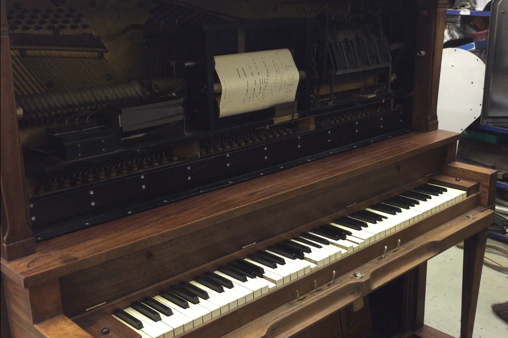
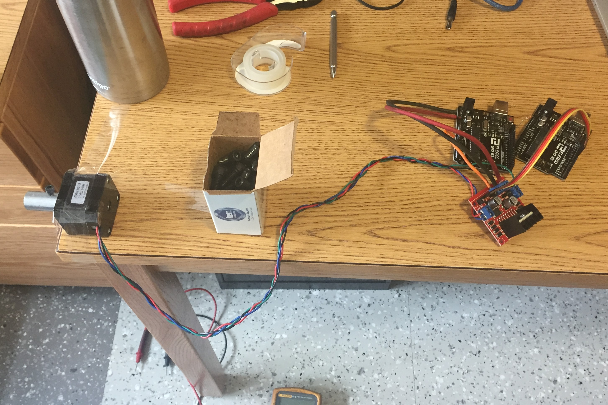
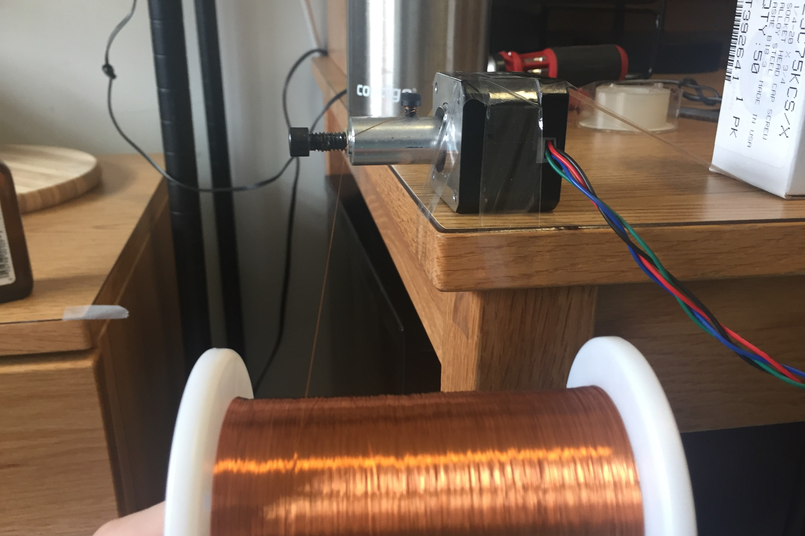
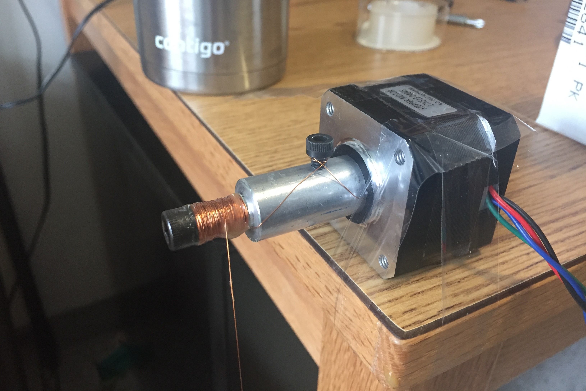
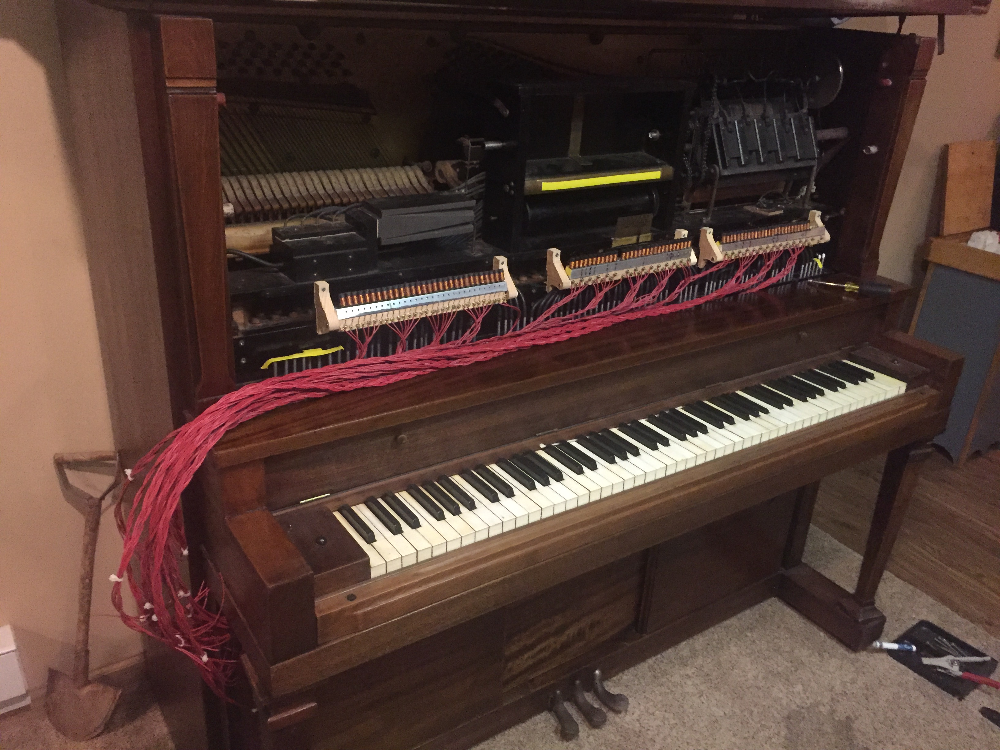
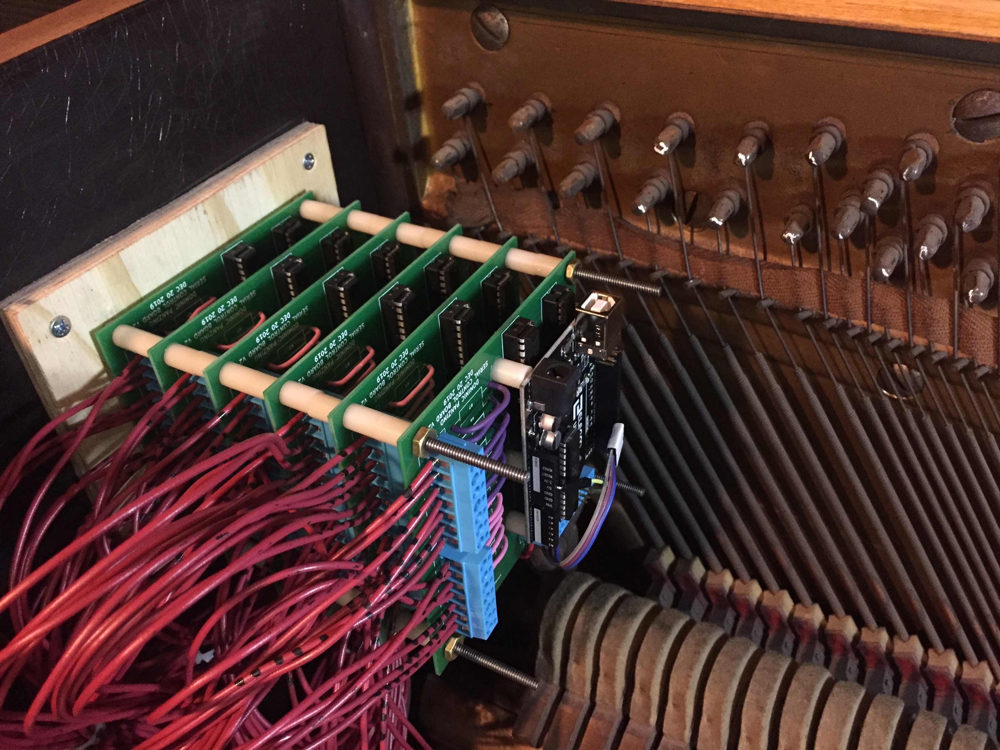
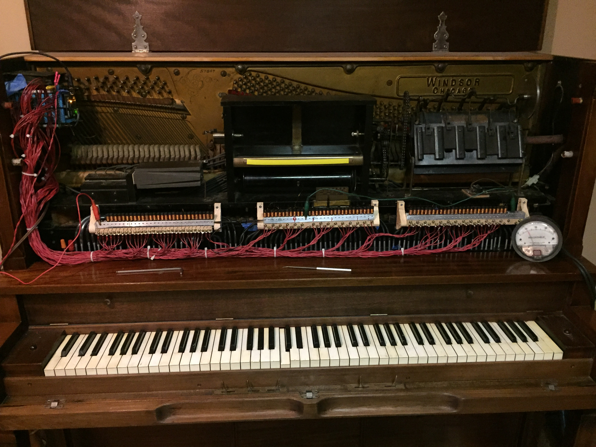

One of the 7 control boards
Player Piano Player (wait, what?)
Fall 2019
Why play a player piano when you can have a computer play the player piano via a player piano player?

It's playing itself! spooky
Firstly, what is a "Player Piano?" A player piano is a piano that can play itself. Modern versions are rare, but do exist, and generally accomplish this through electromechanical means. Most player pianos, however, are very old, built in the 1910s-1920s. These old players are almost universally pnumatically operated. Particularly interestingly, it is actually suction-operated, with the internal operating pressure being below atmospheric, rather than using a pressurized system like we're used to today. The music was encoded on long spools of paper by punching holes in them. These "piano rolls" would be fed through the piano, driven by a pnumatic motor, and passed over a device called a tracker bar, which had many small pilot holes in it. Ordinarily the paper was sucked tight to the tracker bar by the suction and sealed off every port. When a punched hole overlapped a tracker bar hole, it would break the suction, increasing pressure in that chamber up to atmospheric. This would set off a chain of pilot valves and pnumatic switches that ultimately would strike the key of the piano. It is a beautiful and elaborate system that is a ton of fun to watch in action. However, the piano can obviously only play songs for which you have a piano roll, and while there technically is still a piano roll company in business, they don't offer that many modern songs, and they're very expensive. As such, I've been trying to come up with a good way to convert my player piano to a system that could work electronically while still maintaining full back-compatibility. I wanted to augment its functionality, while still being able to use the original piano rolls. The best way I came up with was to have a solenoid valve connected to the chamber that triggers the note pnumatic that could vent that chamber to atmosphere. Then some circuitry magic with shift registers, darlington arrays, and an Arduino, and I'd have myself a player piano player. The valves would vent the chambers to the air to command a note to be played, or a piano roll could vent it the normal way. The only constraint is that the tracker bar would need to be sealed off temperarily in order to use the solenoids. This could easily be done with tape, or with a piano roll by just positioning the roll in the initial silent part of the song, and setting the tempo damper to zero to stop the drive motor. Then the solenoids could go to work.

My solenoid-winding setup on my dorm room desk

Ready to start winding

A wound solenoid
Once I had a design settled, I started winding a few solenoids. The solenoids consist of 475 turns of 32AWG enamel wire on an alloy steel 1/4-20 socket-head screw. The screw obviously is not an ideal core material, but it was a good choice because it was a cheap prefacbricated component that also allows me to easily attach the solenoid to the valve body. When I have to make 88 solenoids, keeping it all inexpensive and fast is critical. I set up an arduino and a stepper motor to turn the core 475 times while I held the wire spool and distributed the wire onto the core. Once wound, I put on a layer of a sealant to hold the wraps in place and then cut it free. The enamel on the wire ends was easily burned off with a lighter to make a good connection. One end of each solenoid is simply attached to the aluminum valve body to act as a common rail. The other end was connected to the signal wires that were then all routed to the control boards.

The bundles of wires from every solenoid to be routed to the control boards.
One of the 7 control boards
The system has 7 control boards to take the signals from the arduino, amplify them, and send them to the solenoids. The solenoids require more current than the arduino could ever supply, so the arduino by itself would not suffice. The board set is basically a large serial-to-parallel converter. Each board has four darlington arrays and two shift registers, which control 14 outputs. Thus, 7 boards are used to control all 88 notes. I designed the boards with kiCAD and had them printed in china and then populated the boards at school.

The control boards installed and wired.
It took a lot of tuning to get the solenoids to all work reliably, and the current needed ended up higher than expected, but the boards seem to be able to take it once I added a computer fan to keep the ICs cool. Power is supplied by a 13.8V power supply, with peak currents getting up to 6amps (but averaging around 2.5A). The software is still under development, but for now it is a python script using pySerial and mido to interpret MIDI files and send commands to the arduino in real-time. The software is set up to send simultaneous notes as one set of data, so the arduino can only shift out the serial data when needed to save on processing time. This is important because due to noise, the transfer speed into to the shift registers is fairly low, and this can take up a substantial amount of time (i.e. a few milliseconds). So far though, this has not been a problem except for malformed midi files. There can still be a slight delay in the solenoid activating, so some very fast songs (La Campanella) can have some trouble.

The full piano assembly. The jumper cables were replaced by proper connections later :)